Running Containers on AWS Fargate
Build a Continuous Deployment Pipeline
In this module you’ll build a continuous deployment pipeline to automatically move our changes from our source code repository to prodcution on check-in. We’ll use AWS CodeCommit as our source code repository, AWS CodePipeline to ochestrate the pipeline and AWS CodeBuild to build and push our Docker container.
The pipeline has three stages. In the Source stage, the pipeline downloads the latest revision from CodeCommit. In Build stage, the pipeline triggers a CodeBuild build to assemble a new Docker container image and push it to Amazon ECR. In the process, it will generate a JSON file defining the new Docker image tag and which container should be update. CodePipeline will use that configuration in the Deploy stage to replace the container’s image URL within your service.
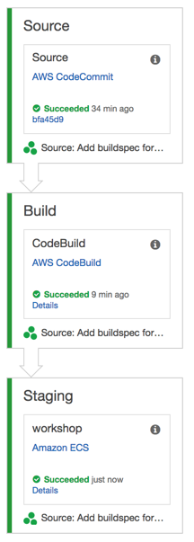
Setup
Ensure that you’ve followed the setup guide before starting this module. This section builds upon the Introduction section which must be completed first.
For this section, you’ll require an IAM user with access to create and modify resources in the following services:
- IAM
- AWS CodeCommit
- AWS CodePipeline
- AWS CodeBuild
Implementation
1. Create a AWS CodeCommit Repository
To get started, we’ll need a place to keep our code. AWS CodeCommit is a fully-managed source control service that makes it easy to host secure and highly scalable private Git repositories.
✅ Step-by-step Instructions
Go to the AWS Management Console, click Services then select CodeCommit under Developer Tools.
Click Get started if this is your first visit to the CodeCommit console, or Create repository if you’ve used it before.
Enter
workshopinto Repository nameClick Create repository.
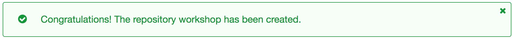
2. Push the Application to AWS CodeCommit
Now that we have a repository, we want to push our code into it. These next few steps will configure git to use the AWS CLI credential helper, move the origin remoe to the CodeCommit repository, and push to it.
Switch to the tab where you have your Cloud9 environment opened. Run the next few commands in the terminal.
Configure the CodeCommit AWS CLI credential helper:
git config --global credential.helper '!aws codecommit credential-helper $@' git config --global credential.UseHttpPath trueSet the remote URL of origin to the new CodeCommit repository:
git remote set-url origin https://git-codecommit.us-east-1.amazonaws.com/v1/repos/workshopPush the code to CodeCommit:
git push origin master
3. Create a Service Role for AWS CodeBuild
CodeBuild will need permission to push to our Amazon ECR repository on our behalf. In this section, we’ll create a service role for CodeBuild that allows it to authenticate with ECR and push an image into our repository.
✅ Step-by-step Instruction
Go to the AWS Management Console, click Services then select IAM under Security, Identity & Compliance.
Click on Roles in the left-hand navigation.
Click Create role.
First, we’ll configure which AWS service can assume this role. Click CodeBuild from the Choose the service that will use this role list.
Next, choose CodeBuild from Select your use case.
Click Next: Permissions.
Click Create policy. The visual policy editor will open in a new tab.
Click on Choose a service and click EC2 Container Registry.
Click on Actions.
Expand the Read permissions and check the BatchCheckLayerAvailability and GetAuthorizationToken checkboxes.
Expand the Write permissions and check the CompleteLayerUpload, InitiateLayerUpload, PutImage, and UploadLayerPart checkboxes.
Click Resources to limit the role to the workshop repository.
Click Add ARN next to repository.
Enter
us-east-1in Region, your [Account ID][find-account-id] in Account, andworkshopin repository.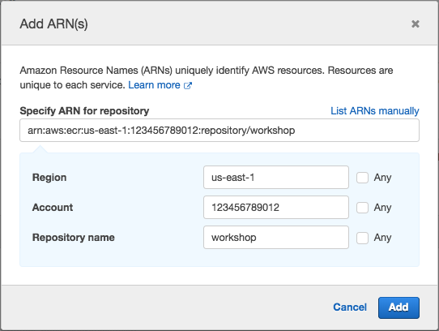
Click Add.
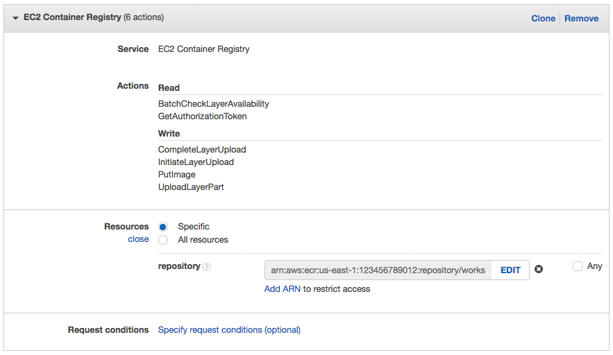
This will result in a policy allowing CodeBuild to get an authorization token via ecr:GetAuthorizationToken and the required actions to push an image to the workshop repository.
{ "Version": "2012-10-17", "Statement": [ { "Effect": "Allow", "Action": [ "ecr:CompleteLayerUpload", "ecr:UploadLayerPart", "ecr:InitiateLayerUpload", "ecr:BatchCheckLayerAvailability", "ecr:PutImage" ], "Resource": "arn:aws:ecr:us-east-1:123456789012:repository/workshop" }, { "Sid": "VisualEditor1", "Effect": "Allow", "Action": "ecr:GetAuthorizationToken", "Resource": "*" } ] }Click Review policy.
Enter
WorkshopBuildPolicyin Name.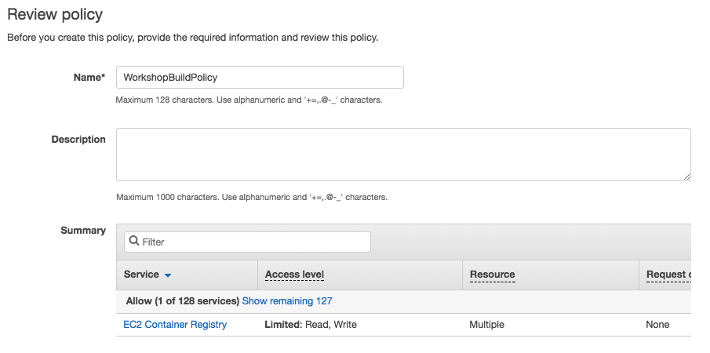
Click Create policy.
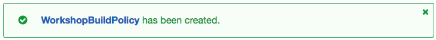
Return to the original tab where you were creating the role. Click Refresh and type
WorkshopBuildPolicyin the Filter textbox. Check the WorkshopBuildPolicy checkbox. Click Next: Review.Enter
WorkshopBuildRolein Role name.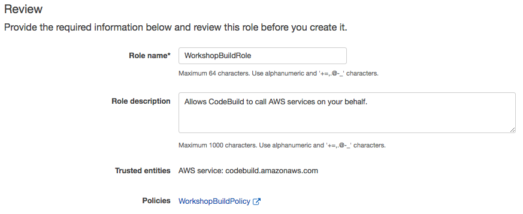
Click Create role.
4. Build the Continuous Deployment Pipeline
Go to the AWS Management Console, click Services then select CodePipeline under Developer Tools.
Click Get started if this is your first visit to the CodePipeline console, or Create pipeline if you’ve used it before.
Enter
workshopinto Pipeline name.Click Next step.
Select AWS CodeCommit from Source provider.
Enter
workshopinto Repository name.Enter
masterinto Branch name.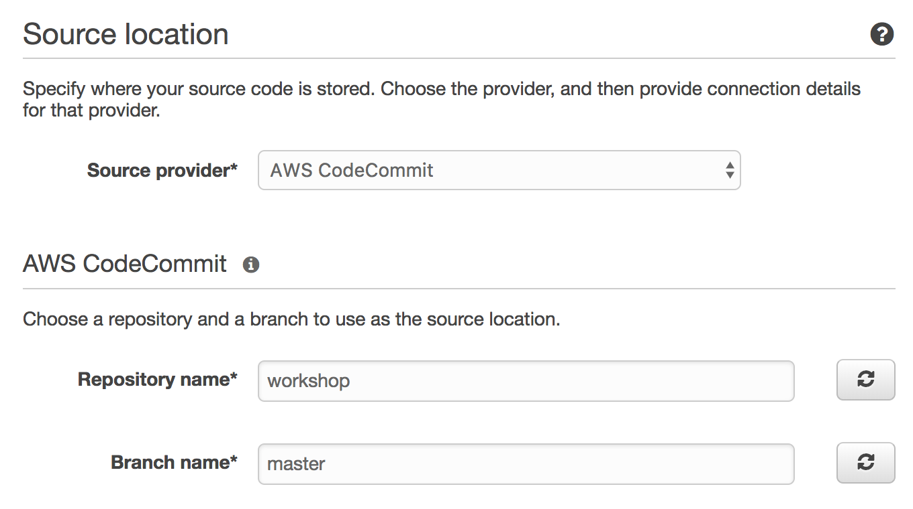
Click Next step.
Select AWS CodeBuild from Build provider.
Tick the Create a new build project radio button.
Enter
workshopinto Project Name.Select Ubuntu from Operating system.
Select Docker from Runtime.
Select aws/codebuild/docker:17.09.0 from Version.
Tick the Choose an existing service role from your account under AWS CodeBuild service role.
Enter
WorkshopBuildRolein Role name.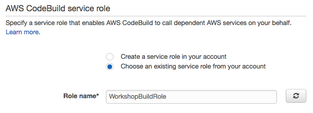
Extend Advanced Settings. Create an Environment Variable for the Amazon ECR repository URI. Enter
REPOSITORY_URIinto Name and the repository URI of the Amazon ECR repository as the value.If you need to find it quickly, switch to your Cloud9 terminal and run:
aws ecr describe-repositories --repository-name workshop --query repositories[0].repositoryUri --output text
Click Save build project.
Click Next step.
Select Amazon ECS from Deployment provider.
Enter
workshopinto Cluster name.Enter
workshopinto Service name.Enter
images.jsoninto Image filename. This is the JSON file generated by the build process that informs CodePipeline and ECS which container should be updated and with what image.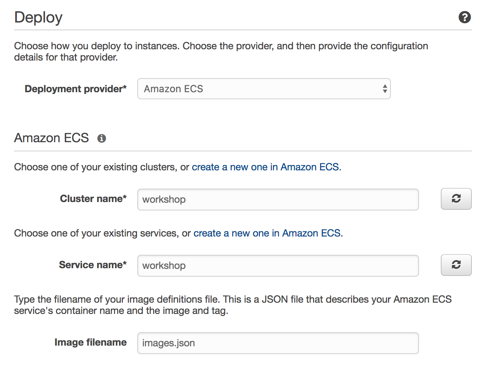
Click Next step.
Click Create role.
This will create a new role for CodePipeline to assume to interact with other AWS services. Click View Policy Document to inspect the permissions it will be granted. Then, click Allow.
Click Next step.
Review the details of the pipeline you’ve configured.
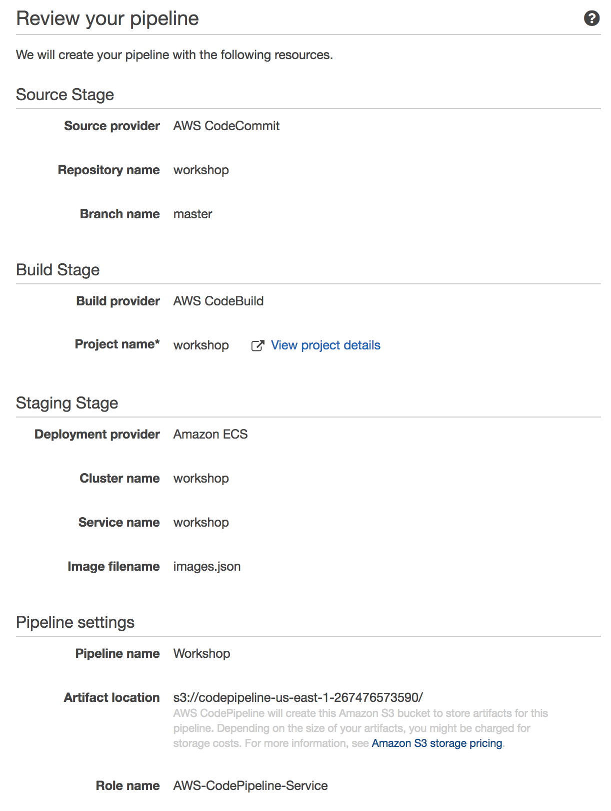
Click Create pipeline.
5. Deploy a New Revision
Switch to the tab where you have your Cloud9 environment opened.
Open the file
fargate-workshop-app/index.jsby navigating to it in the environment tree and double clicking the filename.Scroll down until you find the commented out delete action.
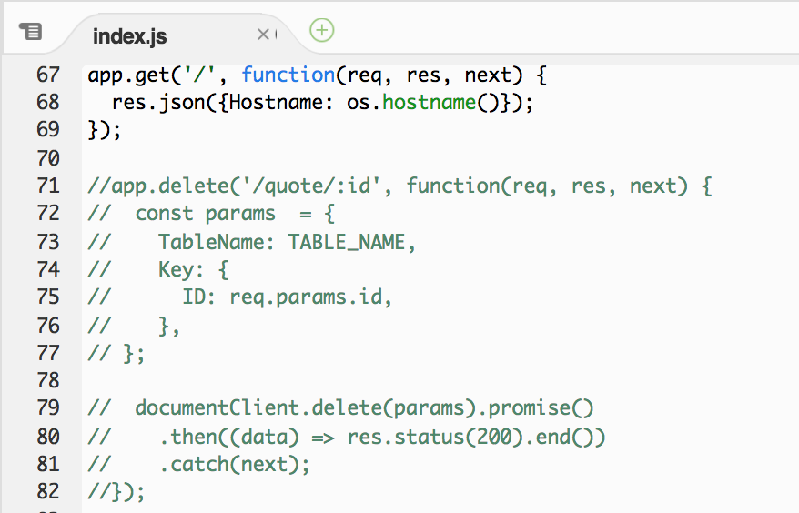
Uncomment the code block. You can do this by selecting the code block, going to Edit, Comment, and selecting Toggle Comment in the menu bar, or processing ⌘-/ (macOS) or Ctrl-/ (Windows / Linux).
Save the file by going to File and selecting Save in the menu bar, or pressing ⌘SS (macOS) or Ctrl-S (Windows / Linux).
Check in the changes by running the following command in the Cloud9 terminal:
git commit -am "Adding delete action"Push the changes to the CodeCommit repository by running the following command in the Cloud9 terminal:
git push origin masterGo to the AWS Management Console, click Services then select CodePipeline under Developer Tools.
Click on workshop.
You’ll see the changes move through the pipeline. While a stage is in progress, CodePipeline indicates this by displaying the stage with a blue color. If successful it’ll turn green, if there’s an error or other issue and the pipeline can’t proceed, it’ll turn red. Wait for the pipeline to complete.
Switch back to your Cloud9 terminal to test the new endpoint. First, create a new quotation by hitting your service through the DNSName of the your load balancer. Replace the hostname in the following command:
curl -Ssi http://YOUR_LOAD_BALANCER_DNSNAME_HERE/quotes -X PUT -H "Content-Type: application/json" -d '{"Text":"If you don’t fail at least 90 percent of the time, you’re not aiming high enough.","AttributedTo":"Alan Kay"}'You’ll get back the HTTP response including a Location header of your newly created quotation:
HTTP/1.1 201 Created X-Powered-By: Express Location: /quotes/93752220-f995-11e7-b1fc-e1cb57d4a62c Vary: Accept Content-Type: text/plain; charset=utf-8 Content-Length: 68 Date: Mon, 15 Jan 2018 01:44:07 GMT Connection: keep-alive Created. Redirecting to /quotes/93752220-f995-11e7-b1fc-e1cb57d4a62cTest your deployment by testing the newly created delete endpoint. Hit the location header above with the DELETE method. For example, for the above output, our command would be:
curl -Ss http://YOUR_LOAD_BALANCER_DNSNAME_HERE/quotes/93752220-f995-11e7-b1fc-e1cb57d4a62c -X DELETE
⭐ Recap
🔑 A continuous deployment pipeline is an automated manifestion of the process for getting your software from version control to your users. AWS CodePipeline is a managed continuous delivery service that builds, tests, and deploys your code on source control changes.
🛠️ You’ve created a repository for your application in AWS CodeCommit, mapped your git remote, and pushed your code to it.
🛠️ You’ve built a continuous deployment pipeline using AWS CodePipeline and configured a build project in AWS CodeBuild. Any changes in the master branch to your project will be automatically built as a Docker image, pushed to Amazon ECR, and deployed to Amazon ECR using AWS Fargate.
🎉 You’ve completed this section!